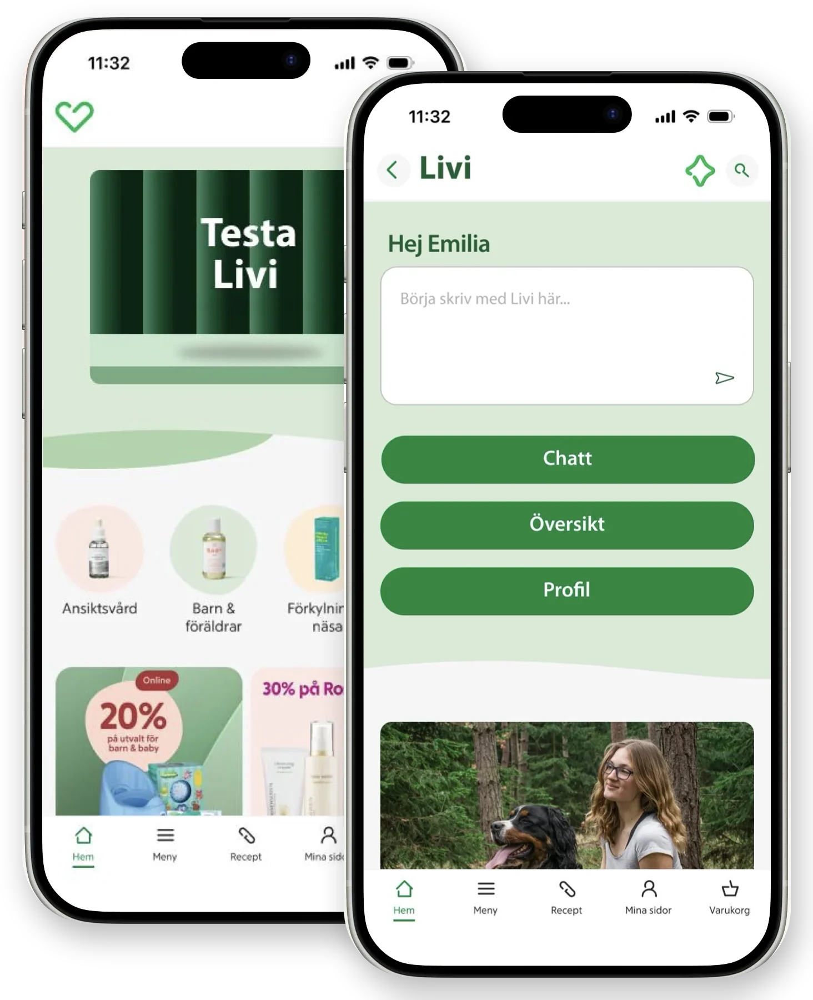
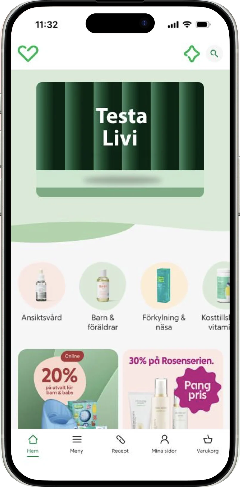
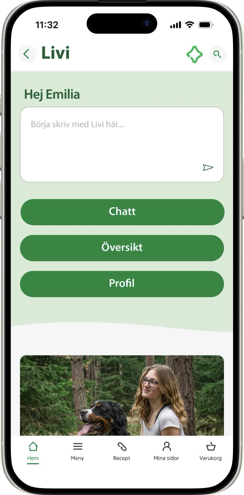
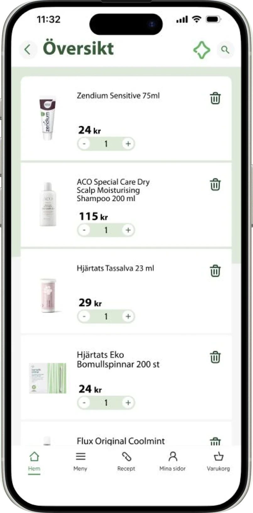
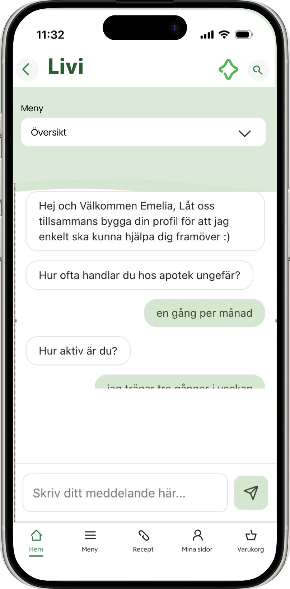
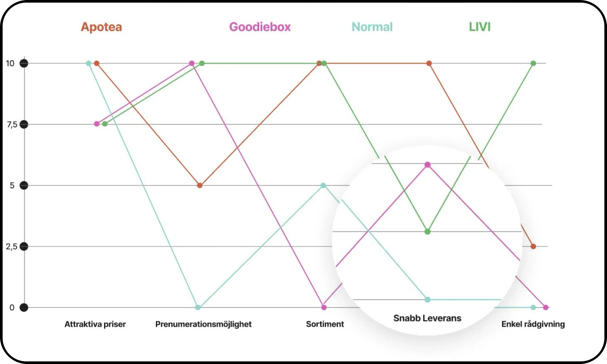
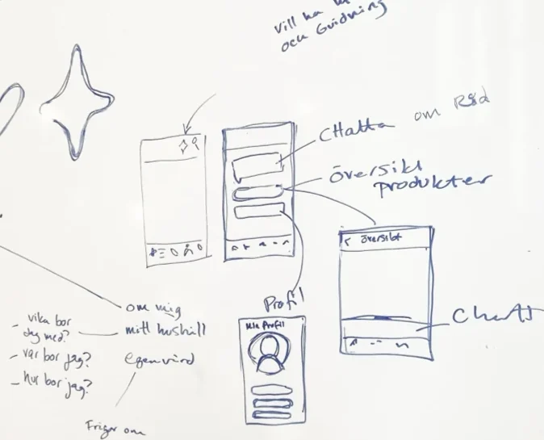
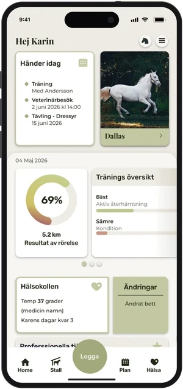

Apoteket Hjärtat
Livi
A service that plans ahead of the customer’s needs, inspires better health and makes every day a little easier. Livi is an AI-assisted refill subscription in Apoteket Hjärtat’s app, made in a two-week course in innovation, UX and UI.
- Deliverables
- UX Research, UI Design, Logo & Visual Identity, Pitch
- Duration
- 2 Weeks
- Team
- Team of 4

The brief
Apoteket Hjärtat wanted to grow online and establish a clear digital presence while leveraging the strength of their physical pharmacies. Our mission was to create a solution that simplifies everyday life for users and strengthens the customer relationship digitally.
The problem
Most of us only notice our self-care products are gone when it’s too late, like toothpaste in the morning, Ipren when the headache hits, or a cold already underway.
So how could we help people aged 25–35 simplify their everyday lives by planning proactively for their health and needs?
The solution
Livi is an AI-assisted refill subscription service in Apoteket Hjärtat’s app. It acts like a helpful friend, predicting when you need refills of toothpaste, shampoo and more, to make your everyday life easier.
- Prevent emergency purchases Avoid stress and expensive panic buys.
- Just-in-time deliveries Always at home when needed, with the flexibility to postpone.
- Personalized guidance AI suggests the right products and refill intervals.
- Seasonal and lifestyle kits Smart, tailored kits for colds, training or changing seasons.




Research
We applied the Double Diamond method to structure the project, from research and insights to idea development, prototyping and delivery of the Livi solution. The method helped us quickly understand user needs and create a clear, user-centred design.
We conducted a Blue Ocean analysis, comparing Apoteket Hjärtat to competitors like Apotea (fast delivery), Normal (price) and Goodiebox (subscription).
Insight: Livi “lacks” fast delivery, but it doesn’t matter, because the service is proactive. The package is already at home when users need it.

Development
We brainstormed ideas as a team, created wireframes and user flows, and designed a UI that is simple, trustworthy and aligned with Apoteket Hjärtat’s brand. User interviews in this phase led to the addition of a chat feature for easier management of subscription changes, giving users more control and accessibility.

My role
In this project I was responsible for and involved in:
- Conducting UX research and user interviews, iterating ideas based on feedback from the target group (ages 25–35)
- Performing a Blue Ocean analysis to define the strategic positioning
- Using the Business Model Canvas to make sure the solution created value for both the user and Apoteket Hjärtat
- Designing the UI for the Livi feature
- Creating the logo and enhancing Livi’s visual identity
- Presenting and pitching the concept to Apoteket Hjärtat

